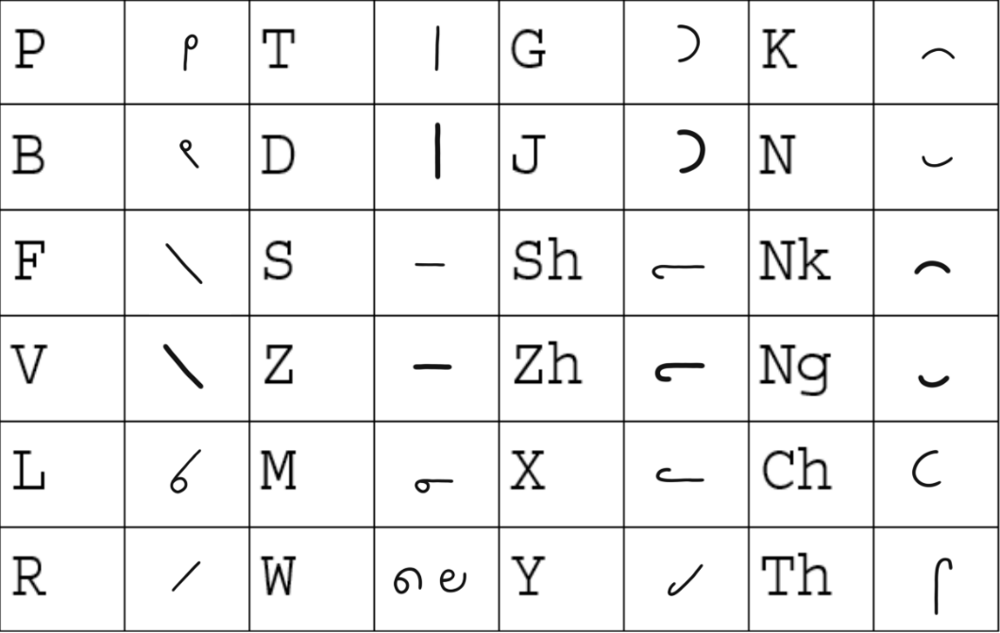
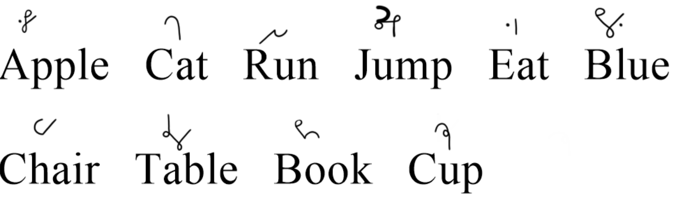

Before we get started I would like to note that NeoTaylor is a heavy-line system. Meaning that you should try to write it in a way such that you can write thin lines and thick lines in one stroke. The best way of acheving this would be with a fountain pen or pencil. However if this is not possible then while it will be harder to read back most of the shading is used to distinguish letters which already had double meaning in standard Taylor. I do recommend that if you are going to use light lines that you write D as a downward diagonal stroke (/) and R as an upward diagonal stroke (and as a longhand R if written alone).
Some of the letters in the alphabet do not directly align to English letters. Ch makes the sound in words like "Chair", Sh makes the sound in words like "shading", Zh makes the sound in words like "measure", and Th makes the sound in words like "the" or "thursday".
Words are written with every stroke connected to each other like in cursive[1]. Looped letters can have the loop on either side[2]. They are written how they sound (their phonetics) as opposed to how they are commonly written in longhand (orthographics)[5].
However NeoTaylor is known as an abjad. Meaning vowels are seldom written. A word like "cat" would be written as "K-T", "dog" would be written as "d-g", etc. Vowels are only written if they are pronounced at the start or end of a word. In that case all vowels are written the same using the omnivowel dot. If the stroke is vertical then the dot is on the left or right and if horizontal then the dot is on the top or bottom depending on if the vowel is at the start or end of the word respectively[3]. Diphthongs which are two vowels pronounced at the same time like "oi" are represented with the same omnivowel dot[4].
In the middle of a word the letters H and Y should be omitted[6]. Double letters in the middle of a word also should be omitted[7]. Consonant pairs like Th, Ng, etc should always be written.
Words that sound like long O like "oh" or "owe" are written as a standalone loop like a longhand O[10].
Some examples of outlines in NeoTaylor.
